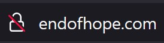
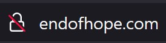
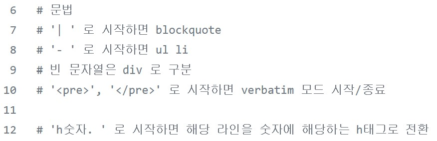
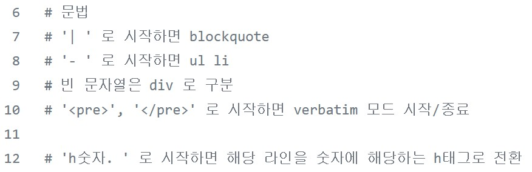

어쨌든 3일 연휴가 문제다.
10/9/2021
개인 도메인을 2002년 부터 유지하고 있다. 그 동안 사이트를 서비스하는 시스템은 직접 만들고 있었고 java, c, python, perl를 차례로 구축한 언어는 바뀌었지만 데이터를 RDBMS에 저장하고 동적 컨텐츠를 cgi 등으로 만드는 큰 틀에서는 동일한 방식을 유지해 왔다. 20년이나!
작년부터인가 대부분의 브라우저들이 HTTPS 가 아닌 연결에는 보안 경고를 띄우기 시작했다. 그러다 보니 SSL 인증서가 없는 endofhope.com 도

처럼 뭔가 모자란 듯한 모습이 되어 버렸다. 그렇다고 서버 호스팅으로 사이트를 재 구축해서 SSL 인증서를 추가하는 건 개인 만족을 위해 너무 거창한 짓을 벌인다 싶어 github page 로 이전하는 것으로 타협을 보았다.
작년부터인가 대부분의 브라우저들이 HTTPS 가 아닌 연결에는 보안 경고를 띄우기 시작했다. 그러다 보니 SSL 인증서가 없는 endofhope.com 도

처럼 뭔가 모자란 듯한 모습이 되어 버렸다. 그렇다고 서버 호스팅으로 사이트를 재 구축해서 SSL 인증서를 추가하는 건 개인 만족을 위해 너무 거창한 짓을 벌인다 싶어 github page 로 이전하는 것으로 타협을 보았다.
Github Page 에 블로깅을 가능하게 해 준다는 Jekyll 이라는 것 잠시 봤는데 결국은 markdown 으로 글을 작성하면 static 한 html로 바꿔 github page 에 추가해 주는 것이었고 이걸로 해 볼까 하다가 이게 ruby로 작성되어 있고 사용하려면 ruby 를 local에 깔아야 한다는 것을 알고서는 쿨하게 접었다. 사람은 비합리적이다. 10년도 넘은 경험이 현재의 행동을 제약한다.
이런 저런 생각을 좀 하다가 대체 휴일이 3일 연휴를 만드는 바람에 내가 하는 결정이 다 그러하듯, 결론은 일본을 공격한다 없으면 그냥 만든다 가 되어버려 홀린 듯 몇몇 태그를 지원하는 마크업 생성기를 만들기 시작했고 그 결과 Volken::Mark 이 되었습니다. ㅇ.ㅇ

예를 들어 Info는 아래와 같이 구성할 수 있다.

예를 들어 Info는 아래와 같이 구성할 수 있다.
<div style="text-align: center;" > <img class="s_img" src="img/최희탁.jpg" /> h3. 최 희탁 (Heetak Choi) h5. endofhope at naver.com </div> h2. 경력 - 2009 ~ 현재: NAVER corp. 책임리더 - 2002 ~ 2009: TmaxSoft co. 책임연구원 h2. 학력 - 서울대학교 수학과 졸업 - 대구 경신 고등학교 h2. 쓴 책 <img src="img/좋은선택.jpg" /> h3. 좋은 선택, 나쁜 선택. 합리적인 선택을 위한 데이터 바로 읽기 (한빛미디어 2019) - at <a href="http://www.yes24.com/Product/Goods/69250118">yes24</a> - at <a href="http://www.hanbit.co.kr/store/books/look.php?p_code=B9554886483">한빛 미디어</a> <img src="img/서블릿컨테이너의이해.jpg" /> h3. 웹 프로그래머를 위한 서블릿 컨테이너의 이해 (한빛미디어 2012) - at <a href="http://www.yes24.com/24/Goods/12465573?Acode=101">yes24</a> - at <a href="http://m.hanbit.co.kr/store/books/book_view.html?p_code=E1064947038">한빛 미디어</a> h2. 내가 만든 것들 h3. <a href="https://github.com/heetakchoi/neurasthenia">Neurasthenia</a> - 서블릿 컨테이너 - <a href="https://jcp.org/aboutJava/communityprocess/mrel/jsr154/">Servlet specification 2.5</a> 구현체 - 코멧(Comet) 구현 - <a href="http://en.wikipedia.org/wiki/Comet_%28programming%29">What is comet?</a> - <a href="https://github.com/heetakchoi/neurasthenia">Repository in github</a> h3. <a href="https://github.com/heetakchoi/spiegel/tree/develop/perl/board">Board system</a> - Perl, CGI, MySQL로 구성 - github page 로 이전하기 전 endofhope.com 구축에 사용 - <a href="https://github.com/heetakchoi/spiegel/tree/develop/perl/board">Repository in github</a> h3. <a href="https://github.com/heetakchoi/heetakchoi.github.io">heetakchoi.github.io</a> - github page 기반으로 재 구축하기 위해 static web site 생성기를 만들었고 그를 통해 재 구성된 endofhope.com h3. <a href="https://github.com/heetakchoi/volken">Volken library</a> - Perl 로 작성된 여러 Utility module - Volken::File - 두 개의 디렉토리를 비교하여 하위의 디렉토리와 파일의 sync 를 맞춰준다. - Volken::Http, Https - HTTP, HTTPS client library - Volken::Json - JSON Parser - Volken::Mark - <ul>, <blockquote>, <pre>, <h> 정도의 간략한 문법을 지원하는 마크업 생성기 - Volken::ZN, QN - 정수, 유리수 지원 수 체계
원래 처음에 계획을 세워 진행한 것이 아니라 일단 시작하고 결과가 나올 때 까지 밀어붙인 터라 어처구니 없는 시행착오도 꽤나 있었다. github page 에 이전하면 https 가 되리라 생각하고 시작했는데 이것 부터 오산이었다. endofhope.com 도메인으로 접근한 사람은 여전히 HTTP 만 되는 것이 당연한데 이걸 다 옮겨 놓고서야 깨달았다. 그렇다고 도로 없던 일로 덮을 수는 없는 법 그때 이미 쓸데없이 발빠르게 웹 호스팅 계약은 종료를 시키기도 했고 도메인을 샀던 업체에서 제공하는 서비스 중 하나인 마이크로 사이트에 잠시 github page로 가는 통로만 살려 놓았다.